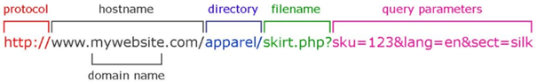

ČO SÚ WEBOVÉ STRÁNKY ?
Web page (webová stránka) je dokument obsahujúci hypertext, obrázky a iné multimediálne prvky uložený obyčajne na webovom serveri prístupný prostredníctvom služby World Wide Web v sieti internet. Zobrazuje sa používateľovi pomocou webového prehliadača.
Webové stránky sú obyčajne písané v značkovom jazyku HTML alebo XHTML a prenos prebieha pomocou protokolu HTTP. Ako zdroj dát môže slúžiť databáza.
Webový server môže byť:
-
Počítač, ktorý je zodpovedný za vykonávanie príkazov HTTP od klientov – programov zvaných webový prehliadač. Vykonaním požiadavky sa rozumie odoslanie webovej stránky. Webové stránky sú obvykle dokumenty HTML.
-
Počítačový program, ktorý vykonáva činnosti opísané vyššie.
World Wide Web WWW
Počítač, ktorý je zodpovedný za vykonávanie príkazov HTTP od klientov – programov zvaných webový prehliadač. Vykonaním požiadavky sa rozumie odoslanie webovej stránky. Webové stránky sú obvykle dokumenty HTML.
každý dokument má svoju špecifickú adresu – URL a je pomocou nej nájdený a zobrazený v programoch nazývaných webový prehliadač
Internet
je verejne dostupný celosvetový systém vzájomne prepojených počítačových sietí, ktoré prenášajú dáta pomocou prepínania paketových dát s použitím štandardizovaného Internetového Protokolu (IP) a mnohých ďalších protokolov
Webový prehliadač (web browser)
je aplikačný softvér umožňujúci používateľovi zobrazenie a interakciu s HTML dokumentmi
najrozsiahlejšia známa zbierka prepojených dokumentov je známa ako World Wide Web
prehliadače dostupné pre PC patria napr.: Internet Explorer, Firefox, Opera, Google Chrome a Safari
Hypertextový prenosový protokol HTTP
je protokol na prenos html dokumentov medzi servermi a klientmi služby WWW, pričom definuje ich požiadavky a odpovede
Zabezpečený hypertextový prenosový protokol HTTPS
je zabezpečená verzia HTTP, komunikačného protokolu World Wide Web
Jednotný vyhľadávač prostriedku URL
(angl. Uniform Resource Locator) je univerzálny formát mien používaný na označenie zdroja na internete

 HTML
CSS
JavaScript
HTML
CSS
JavaScript